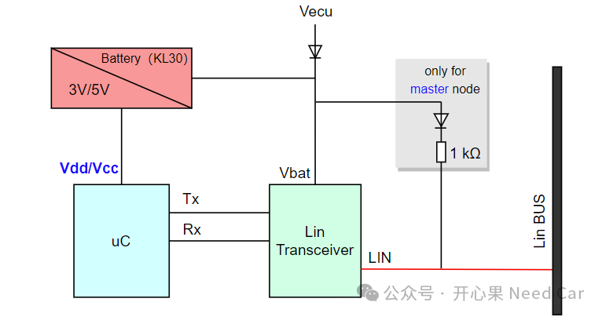
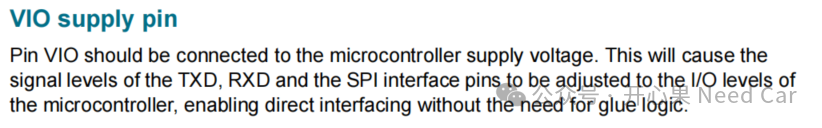
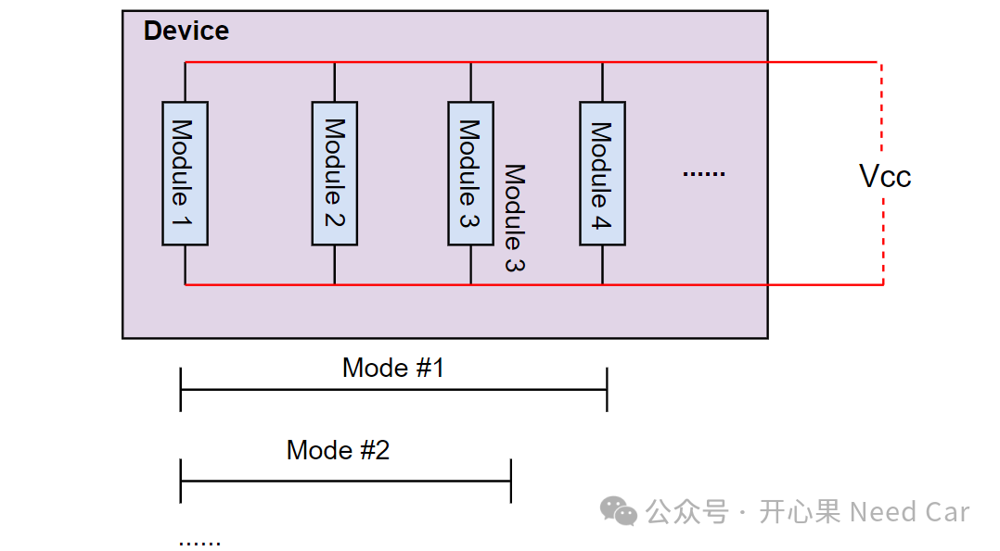

在控制器的PCB中，Vio和Vcc是常见的两种电压标号，尤其在收发器（Transceiver）和主芯片之间，常会看到这两种电压标号。它们的作用是什么呢？有什么区别呢？本文，聊一聊Vio、Vcc。Vcc（Voltage Current Condenser）是指电路供电电压，即：为整个电路或器件供电的正电压源。在电路中，可以为uC、Transceiver等提供直流电源，eg：3.3V、5.0V。注意，有时也会在电路中看到Vdd，Vdd指的是器件内部的工作电压，同样也是正电压源。如果一个器件中即包含Vcc，又包含Vdd，这个器件则可能外接不同的电压值，现在的集成电路中，Vcc和Vdd已不再严格区分。比如，一些集成电路中，uC的供电有的标Vdd，有的标Vcc，示意如下：
Vio (Voltage Input/Output)是指输入或者输出的接口电压，它用于设置芯片的输入、输出引脚的逻辑电平，使得该芯片能够与工作在不同电压水平的其他设备兼容。在某些收发器芯片中，Vio也称为收发器I/O电平转换电源电压。
比如：uC（主芯片）的输入（RxD）脚、输出（TxD）脚电平需要和TJA1145的输出（TxD）、输入（RxD）脚电平保持一致，两个芯片方能有效通信，示意如下：如上图，TJA1145和uC的工作电压Vcc不同，但是，输入给TJA1145的Vio和输入给uC的Vcc需要保持一致，以便于两者之间通信的Pin电压可以保持一致，进而准确传输数据信息。Vcc和Vio不一定相同，取决于系统需求。比如：TJA1145的Vcc和Vio电压不同，而TJA1145的Vio和uC的Vcc相同。芯片的正常工作依赖Vcc和Vio的供电，当uC需要3.3V供电时，Vio需要外接3.3V；当uC需要5V供电时，Vio需要外接5V。为什么uC有的用3.3V，有的用5V呢？随着制程工艺的提升，介质能承受的电压阈值降低，再考录一定的安全裕量，因而芯片的电压也可以进一步降低（3.3V也就随之来了）。但是，为了兼容以前的器件，在实际设计中，还会保留5V的兼容。当然，除了3.3V、5V等电压，芯片中还会看到1.25V等电压需求。（一）TJA1145对Vio描述
在TJA1145的手册中，对Vio的描述如下：

怎么理解呢？直白的解释：Pin Vio应当连接到微控制器（即：主芯片）的供电电压（也就是Vcc）上。这样会使得 TxD、RxD以及SPI接口引脚的信号电平调整至与微控制器I/O 电平相匹配，从而实现直接交互，无需额外的胶合逻辑电路（glue logic），简单理解，就是无需额外的电压转换处理。
（二）不同模式下，Vcc相同吗
如果某个设备（Device）的Vcc正常输入，不同模式（Mode）下，可以看作设备工作的模块（Module）个数不同。虽然每个模块的阻值可能不同，但是，每个模块的工作电压（Vcc）可能相同，因此，每个模块的电流不同（I = U / R），每个模块的功耗也不同（P = U*I = I2*R）。如果工作的模块数量不同，也就可以看作进入了不同的功耗模式，也就是不同的模式状态，示意如下：

点击下方关注，一起聊聊Autosar/嵌入式，如果需要，联系作者进群，给你更专业的解答